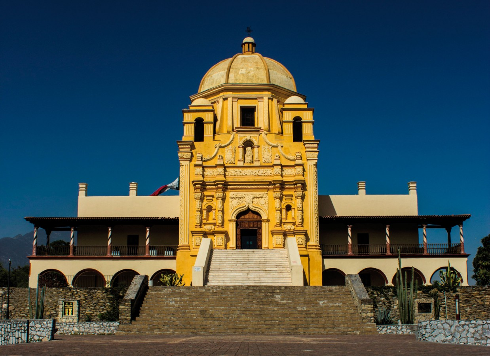

El Obispado es un monumento localizado en el país de México.
Este se encuentra en el estado de Nuevo Leon en Monterrey.
Es un monumento un poco antigüo que representa mucho la
historia de Monterrey al igual que su propia historia.
Al visitarlo, a veces puedes entrar al edificio que tiene
muchos articulos utilizados a traves del tiempo en batallas.
Ademas, muestra muchas historias de Monterrey. Como un "bonus"
puedes subir la montaña donde se localiza hasta llegar a el
mirador. Ahí se encuentra la bandera de México al igual que
algunas otras versiones previamente utilizadas. Como esta es
una breve descripción, puedes dar clic aquí para más información.
Existen muchos monumentos mejor conocidos por mas personas
pero considero que El Obispado sigue siendo un monumento
increible.
Personalmente lo he visitado varias veces y lo
recomiendo.